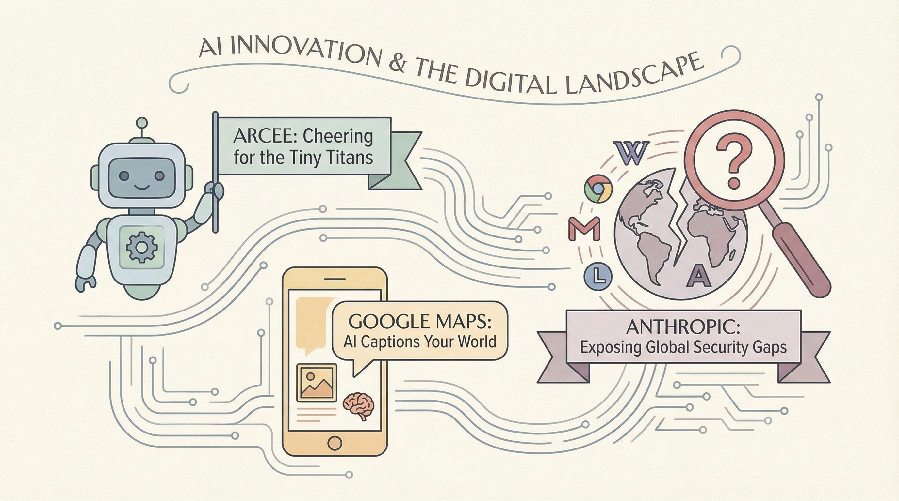

小型开源AI模型制造商Arcee推出高性能开源LLM，获得OpenClaw用户青睐。
两克伴AIGC日报
2026-04-08 星期三

本期关注：Anthropic发布AI模型Mythos（Project Glasswing），在主流操作系统及浏览器中发现零日漏洞，联合45家机构提升AI网络安全；同时AI代理推动以代理为中心的流程重构，动态优化工作流，开源模型Arcee及Google Maps AI功能也受关注，展现AI在安全...
📰 行业动态
Google Maps推出AI生成照片描述功能，方便用户分享当地知识。
Anthropic发布新AI模型Project Glasswing，与多家公司合作进行网络安全测试。
Anthropic与苹果、谷歌等45家机构合作，共同提升AI网络安全能力。
🔥 今日焦点
Anthropic近日宣布了其最新AI模型Mythos，该项目隶属于Glasswing计划。该模型在发现和利用软件漏洞方面表现出色，成功在所有主流操作系统和浏览器中发现了零日漏洞。例如，它发现了一个27年前的OpenBSD漏洞，允许攻击者通过连接到机器来远程崩溃任何设备；还发现了一个FFmpeg中的16年旧漏洞，自动化工具曾误打误撞地执行了500万次。Mythos能够自主地将Linux内核漏洞链式利用，从普通用户访问升级到对整个机器的控制。在SWE-bench（agentic编码）测试中，其表现优于Opus 4.6，达到了93.9%的准确率。这一成果不仅令人震惊，也极具前瞻性，对AI领域的发展具有重要意义。Mythos的成功展示了AI在安全领域的巨大潜力，有望推动AI技术在漏洞检测和防御方面的应用。
---
《Enabling agent-first process redesign》一文由MIT Technology Review Insights发表，探讨了AI在流程优化中的新角色。文章指出，与传统的基于规则的静态系统不同，AI代理能够通过实时交互学习、适应并动态优化流程。AI代理能够自主执行整个工作流程，但这需要企业重新设计流程，以代理为中心而非将它们作为传统优化方法附加于碎片化的遗留工作流程。这种以代理为中心的流程重构对于释放AI的潜力至关重要，它不仅能够提高效率，还能推动AI领域向更加智能化、自适应的方向发展。对于AI从业者而言，这一理念的重要性在于它揭示了未来流程设计的新趋势，为AI在各个行业中的应用提供了新的思考方向。
📚 深度长文
《Deep Agents v0.5》一文由Chester Curme撰写，深入探讨了深度学习领域的新进展。文章核心观点在于介绍了Deep Agents v0.5版本的新特性，包括异步子代理、扩展的多模态文件系统支持等。
文章详细阐述了异步子代理的原理和应用，指出Deep Agents可以通过委托工作给后台运行的远程代理来提高效率。这一特性使得Deep Agents在处理复杂任务时，能够更加高效地利用资源，从而提升整体性能。
LangChain Accounts撰写的文章《Arcade.dev tools now in LangSmith Fleet》揭示了Arcade作为MCP运行时在生产代理中的应用，为代理提供了安全的授权、可靠的工具和治理。该文章的核心观点在于，Arcade的集成使得代理能够通过一个安全网关访问其庞大的工具库，包含超过7,500个针对代理优化的工具。这一创新不仅提升了代理的效率，还确保了操作的安全性。
文章的关键论据包括Arcade在代理运行时的关键作用，以及通过LangSmith Fleet实现工具集成的具体优势。文章深入探讨了Arcade如何通过单一入口提供多样化的工具支持，从而简化了代理的操作流程，增强了系统的可靠性和治理能力。
Anthropic近期推出的 Claude Mythos 模型，在经过严格限制后，仅向部分合作伙伴开放，这一举措引发了广泛关注。Claude Mythos 作为一款通用型模型，与 Claude Opus 4.6 相似，但在网络安全研究方面展现出强大的能力。Anthropic 表示，该模型能够发现数千个高严重级别的漏洞，涉及各大操作系统和浏览器。鉴于人工智能技术的快速发展，这种能力很可能迅速扩散，甚至超出那些致力于安全部署的参与者。为此，Anthropic 推出了 Project Glasswing，旨在为软件行业争取时间，以应对潜在的安全风险。本文深入探讨了 Claude Mythos 的技术特点、Project Glasswing 的战略意义，以及其对网络安全领域的影响，对于AI从业者和研究人员具有重要的阅读价值。
🛠️ 产品推荐
Swiper Studio v2是一款基于开源滑块库Swiper的视觉构建器，具备AI代理支持。该产品通过重新设计的编辑器、键盘快捷键、元素动画、视频支持、响应式断点、Next.js导出等功能，为用户提供了便捷的滑块构建体验。特别引入的MCP服务器，允许AI代理（如Claude、Cursor等）通过自然语言构建滑块，极大地提升了开发效率，降低了技术门槛。Swiper Studio v2旨在帮助开发者快速、高效地创建个性化的滑块效果，解决传统滑块开发过程中的复杂性和耗时问题。
---
Clify是一款基于Claude Code的插件，旨在从任何API文档中生成完整的CLI仓库。用户只需提供API文档URL，Clify即可自动生成针对每个端点的命令、烟雾测试，且无需任何npm依赖。该产品极大地简化了CLI开发流程，节省了时间和精力。对于需要管理广告活动等任务的用户，Clify能够快速生成高效的CLI工具，提高工作效率。
---
Pitlane 是一款开放平台，专注于将AI智能体从提示阶段推进到生产阶段。该平台通过简化AI开发流程，助力用户快速构建和部署智能应用。Pitlane 的核心功能在于其高效的AI能力，能够将复杂的人工智能技术转化为易于使用的工具。对于技术从业者而言，Pitlane 提供了便捷的AI解决方案，帮助他们解决在AI应用开发过程中遇到的问题，提高开发效率，降低开发成本。